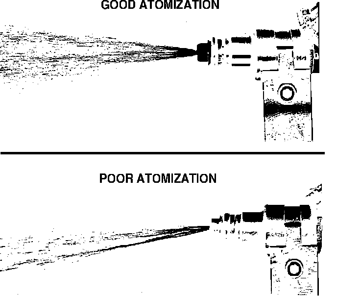
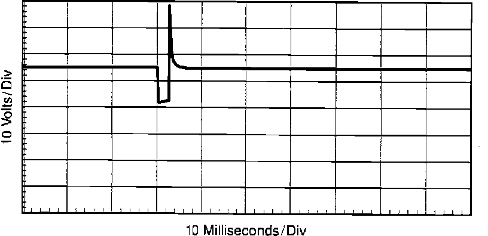
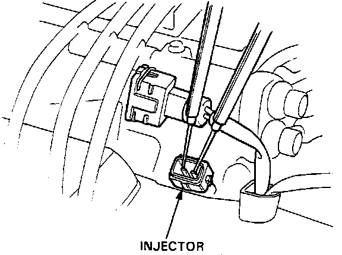

Fuel Injector: Testing and Inspection
NOTE: Before testing the injectors, check the basic engine condition and tune-up. Do NOT assume that the injectors are at fault until checking idle speed, ignition timing, and idle CO%.Injector Spray Pattern:

Spray pattern quality effects all aspects of engine performance. Poor fuel injection performance can contribute to:
^ Hard starting and stalling when cold
^ Poor cold driveability
^ Rough idle
^ Backfiring on acceleration
^ Combustion knock
^ Poor warm restart
^ Surging at cruise speed
^ Dieseling
IF ENGINE WILL RUN
1. Disconnect EACV 2 wire connector.
2. Connect tachometer to engine.
3. With engine idling, disconnect each injector electrical individually while noting rpm drop each time.
4. If rpm drop was approximately the same for each cylinder, injectors are functioning properly. If one or more injectors did not produce an adequate rpm drop continue.
5. Turn ignition off.
6. Disconnect the malfunctioning injector.
Fuel Injector Drive Circuit:

7. Turn ignition on and measure voltage at RED/BLK injector terminal.
Approx. 10 volts, proceed to next step.
Not approx. 10 volts, refer to INJECTOR RESISTOR.
8. Check for continuity in wire between injector and ECU terminal indicated.
Continuity, proceed to next step 10.
No continuity, proceed to next step.
9. Repair open between injector and ECU terminal indicated. End of test.
Scope Pattern - Injector Pulse:

WARNING: Do not use a standard test light for this procedure, permanent damage to the ECU may result.
10. Using an lab scope or "noid light", check for injector pulse across injector terminals with engine running.
Injector pulse present, replace injector. End of test.
No injector pulse present, replace electronic control unit. End of test.
Fuel Injector Resistance:

IF ENGINE WILL NOT RUN
1. Remove injector electrical connectors.
2. Measure resistance across terminals of each injector.
1.5 - 2.5 ohms, proceed to next step.
Not 1.5 - 2.5 ohms, replace injector(s).
3. Turn ignition on and measure voltage at RED/BLK injector terminal.
Approx. 10 volts, proceed to next step.
Not approx. 10 volts, refer to INJECTOR RESISTOR.
4. Check for continuity in wire between injector and ECU terminal indicated.
Continuity, proceed to next step 6.
No continuity, proceed to next step.
5. Repair open between injector and ECU terminal indicated. End of test.
WARNING: Do not use a standard test light for this procedure, permanent damage to the ECU may result.
6. Using an lab scope or "noid light", check for injector pulse across injector terminals with engine running.
Injector pulse present, replace injector.
No injector pulse present, replace electronic control unit.
6. If engine still will not run, refer to FUEL SYSTEMS and inspect fuel delivery system.